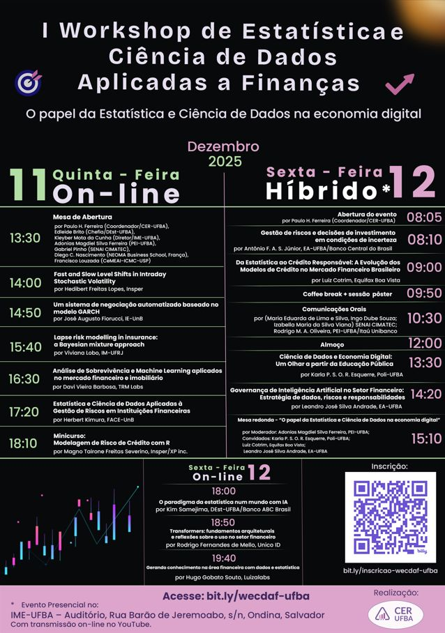

Conference presentations across Europe and Brazil, invited lectures at universities in three countries, and the podcasts and articles where the work has been discussed by other people. I am available for guest lectures, seminars, and podcasts — in English, Portuguese, French, or Dutch.
Newest first. All presented in person unless noted.
Causal Data Science Meeting 2026 (CDSM 2026) · Online — organised by Maastricht University, Rotterdam School of Management, and Technical University of Munich
XXIII Encontro Nacional de Inteligência Artificial e Computacional (ENIAC 2026 · 36th BRACIS) · Cuiabá, Mato Grosso, Brazil
XI Workshop on Probabilistic and Statistical Methods (WPSM 2026) · Federal University of São Carlos, Brazil
Causal Data Science Meeting 2025 (CDSM25) · Online — organised via Technical University of Munich
Accepted through the conference review process; the paper introduces the DiD-BCF estimator.
European Causal Inference Meeting 2025 (EUROCIM) · Ghent University, Belgium
SoFiE 2024 · Pontifical Catholic University of Rio de Janeiro (PUC-Rio), Brazil
CIICE · University of Barcelona, Spain
ESOBE 2023 · University of Glasgow, Scotland
16th International Risk Management Conference · University of Florence, Italy
25th Dynamic Econometrics Conference · Bayes Business School, London, United Kingdom
Invitations extended by the host institution.
Amsterdam University of Applied Sciences (HvA) · International Business programme
Invited to return to a Dutch International Business faculty as a guest speaker, in the same programme I graduated from at HAN.
Institute for Global Nutrition, University of California, Davis · lab-group seminar (online)
On where agentic AI tools are genuinely useful in a research setting: literature review, data cleaning, analysis pipelines, and reproducible research.
Universidade Presbiteriana Mackenzie, Campus Alphaville · Semana de Tecnologia (online)
Invited by the Faculty of Computing and Informatics (FCI) to present recent work (arXiv:2610.18889) on causal inference for zero-inflated outcomes.
Federal University of São Carlos (UFSCar) · Undergraduate Programme in Statistics
Invited by the Coordination of the Undergraduate Programme in Statistics as part of its seminar series.
I Workshop de Estatística e Ciência de Dados Aplicadas a Finanças (WECDAF) · Federal University of Bahia (UFBA), Salvador
Invited by Prof. Paulo Henrique Ferreira da Silva after he served as external examiner on my master's defence. On topological tail dependence in volatility forecasting and causal-inference methods in finance. Watch the recording →
HAN University of Applied Sciences · International Business faculty, Netherlands
Invited to co-teach the same Data Analytics course from which I had earlier been exempted on the basis of already-published research.

WECDAF programme, UFBA — December 2025
Luizalabs' engineering and data science podcast, on causal inference in large-scale e-commerce.
Spotify Podcast · DutchOn LSTM and language-model architectures applied to IoT data, recorded in Dutch.
Springcast Interview · EnglishA long-form conversation on the research path, quantitative finance, and causal inference.
YouTubePlaces where other people wrote about the work.
A dedicated explainer of the DiD-BCF method for the difference-in-differences research community.
diddigest.xyz PressCoverage of the Topological Tail Dependence Theory for a general mathematics audience.
International Maths Challenge AcknowledgementNamed among the external red-teamers acknowledged for the GPT-4o System Card.
openai.com University newsHAN University's announcement of the Student of the Year award.
han.nl Company announcementLuizalabs on the AI-PAVE-Br paper receiving an honourable mention at BRACIS/STIL 2025.
LinkedIn RecognitionMonthly recognition within Luizalabs' data science organisation.
LinkedInI give guest lectures and seminars on causal inference, topological data analysis, forecasting, and the practical use of agentic AI in research. Online or in person, in English, Portuguese, French, or Dutch.